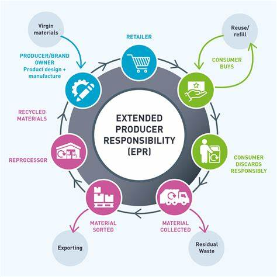

<p>
    Extended Producer Responsibility (EPR) is a crucial aspect of waste management that aims to ensure the responsible disposing of electronic devices that are no longer useful to consumers. It involves the implementation of a reverse collection mechanism and recycling of post-consumer waste to develop an efficient e-waste disposal solution for the disposal of end-of-life products.
<br>
According to the e-Waste Management Rule 2016 and Amendment Rule 2018, manufacturers, producers, importers, and bulk consumers of electrical and electronic equipment have yearly targets to fulfill their EPR obligations. In order to obtain EPR authorization from the Central Pollution Control Board, companies must present an EPR plan that outlines how they plan to collect and recycle complying with EPR and their end-of-life products to achieve their yearly targets.
<br>
To streamline the implementation process of EPR, the Ministry of Environment, Forest and Climate Change, Government of India, has developed guidelines on Extended Producer Responsibility for Electronic and Electric Waste, which were included in the Third Amendment to the e-waste Management Rules in November 2022 to enhance e waste recycling solutions. As per these guidelines, manufacturers, producers, importers, and bulk consumers must register through an online centralized portal developed by the Central Pollution Control Board to improve accountability, traceability, and transparency of EPR obligations fulfillment.

<br>
Overall, EPR represents a crucial aspect of waste management, top e-waste recycling listed companies in India in the electrical and electronic equipment industry must take it seriously to ensure sustainable business practices and protect the environment.
<br>
It’s a policy approach that holds producers (manufacturers, importers, and retailers) responsible for the entire lifecycle of the products they create, particularly once those products are no longer in use and are discarded by consumers. The goal is to reduce waste and environmental impact by encouraging producers to design products that are easier to recycle, reuse, or safely dispose of.

<br>
EPR often involves setting up take-back programs or recycling systems, and it can apply to various types of products, such as electronics, packaging, or vehicles. By making producers responsible for managing waste, EPR incentivizes sustainability and reduces the burden on local governments and consumers to manage the waste.
</p>